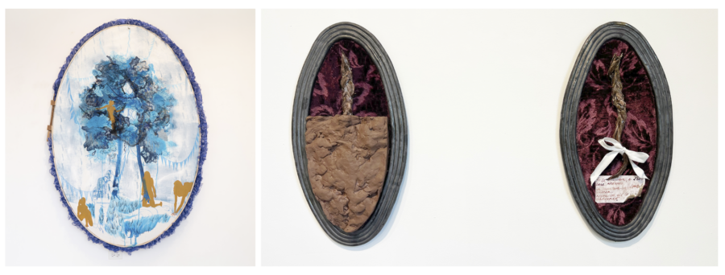

Ruth Poor: Beatrice
On view February 21 – March 18, 2026
Opening Reception Sunday, February 22, 2026, 1-4 pm
Ruth L. Poor, raised in Indiana, uses their work to dissect memories of the rural Midwest and to investigate intersections between power, American history, faith, and deviancy. Poor received their MFA from the Painting & Drawing department at the School of the Art Institute of Chicago (SAIC) and completed their B.A. in Studio Art and Religious Studies at Cornell College and DePauw University. They currently reside in Chicago, Illinois, where they teach at SAIC, North Central College, and College of DuPage, and teach/advise with the Prison + Neighborhood Arts Project. They have shown work nationally and internationally at venues such as the University ofChicago [Chicago, IL], Secrist|Beach Gallery [Chicago, IL], the New York Academy of Art [New York, NY], Zolla/Lieberman Gallery[Chicago, IL], Art EXPO [Chicago, IL], The Green Gallery [Milwaukee, WI], ADDS DONNA Gallery [Chicago, IL], Manifest Gallery[Cincinnati, OH], Woman Made Gallery [Chicago, IL], and Indiana University [Bloomington, IN]. They are also a current Artist-in-Residence with the Chicago Artist Coalition (2024-2026).